v0.8 pre-releaseA Lock of the Lock Family · open source · Apache 2.0
Your agent reads the queue. You hold the key.
Any AI agent can inspect your RabbitMQ brokers through lockmq, with message contents masked. Connections and queue reads wait for you, and the agent never holds a password.
brew trust davidgodefroid/tap
brew install davidgodefroid/tap/lox davidgodefroid/tap/lockmqNeeds Docker. Then lox add lockmq and lox run. The whole family: brew install davidgodefroid/tap/lockfamily.
Part of the Lock Family: one hub (lox run) approves for every Lock.
lockmq · profile devlox run · auto mode
- Connect
- askedonce per
lox runsessionThe password is typed at your terminal, never by the agent. - List
- auto
lockmq queues --filter 'orders.*'Queues, bindings, consumers, policies: answered at once. - Read a stream
- auto
lockmq read order-events --from lastThe customer’s email comes back <redacted:rN.K>. - Peek · unmask
- askedevery timeA peek requeues messages: it exists only on a profile you set to tier
peek.
Approved · y
Your rules, per profile
Each action is auto, ask or deny in .lockmq/config.toml. These are the defaults.
See it run

Swipe sideways to see both terminals.
lox run, and stream reads pass on the default rules.Why lockmq?
“Why does orders.failed fill up?” is a good question for an agent. Answering it means looking at queues, bindings, policies, consumers and, in the end, a few messages.
Handing the agent rabbitmqctl, the management API or an admin password gives it every write too: purge, delete, publish, shovels. It also gets every message body in clear.
lockmq moves the key and the decision out of the agent.
| Property | Agent with credentials | lockmq |
|---|---|---|
| Agent never sees the broker password | No | Yes |
| Agent has no broker connection | No | Yes |
| Only an allowlist of read operations exists | No | Yes |
| Message reads decided outside the agent, by your rules or by you | No | Yes |
| Message bodies, headers and properties masked | No | Yes |
| Stream reads never store an offset | No | Yes |
| Queue peek off by default, asked every time, refused near the delivery limit | No | Yes |
| Policy loosening needs a human confirmation | No | Yes |
| Append-only audit log (never message content) | No | Yes |
In-agent approval is a convenience; a separate approval process is a boundary.
See what you approve
Before a read or a peek runs, the console builds its screen: the stream or queue, where it starts, what moves and the masking in force. The screen goes to lockhub as a signed ticket.
lox run decides it on your profile’s rules, or asks you. A peek shows its side effects before you answer.
╭─ PROD · rabbitmq.example.com:15671 / orders · user lockmq-ro · tier read ─────
│ requested by uid 1000 (alice) · pid 48211 · process "lockmq" (self-reported name)
│ agent: see the order events around 10:42 to explain a missing confirmation
│
│ READ stream order-events from timestamp 2026-10-19T10:40:00Z max 20
│
│ stream: first offset 1200311 · last 1402977 · via stream protocol
│ no offset stored · no message removed
│ PII: masked (2 mask rules, 1 allow rules; body redact-unknown; detectors: card, email, iban, phone)
╰─ pending: ticket 01J…Highlights
One key holder
Credentials are typed at console start, or read from HashiCorp Vault. Never in argv, env, files, logs, the socket or error messages.
Catalogue first
Overview and alarms, queues, one queue with its DLX, TTL, delivery limit and policy; exchanges, bindings, consumers, connections, stream offsets and lag.
Your rules, your decisions
Per profile, each action is
auto,askordeny. By default lists and stream reads pass; the first connection and every peek are asked.Peek, only if you allow it
Reading a classic or quorum queue requeues messages. It exists only on a profile set to tier
peek, and is refused near the delivery limit.Masking for messages
JSON bodies masked per leaf (
redact-unknownon production), headers and properties by rule and name. Binary bodies become a size and a hash.OS separation
The Docker image runs the console under its own account. The kernel checks every peer on the socket.
The AI tightens, the human loosens
The agent may add mask rules or tighten a profile. A new tier, limit, vhost, URL or looser rule waits for your confirmation.
Refusals the agent can act on
Every refusal carries a stable code, a hint and a retry rule: rewrite, ask the user, or stop.
Quick start
Install with Homebrew (the box above). Docker must be running.
In your project,
lox add lockmqasks where your broker is, sets up the lock and starts its console.cd your-project lox add lockmqIn a terminal of its own, outside any agent, keep
lox runopen. Every ticket shows up there for your decision.lox runStart your agent in the project (
claude,codex,gemini, …) and ask: “which queues have no consumer?”
lox add wires Claude Code. For Codex, Cursor or Gemini CLI, also run lockmq init codex (or cursor, gemini).
Know the limits
The console is the enforcement point. Skills, rules and MCP tool descriptions only guide the agent.
Masking is best effort. A queue peek is not read-only (messages are requeued), so it is off unless you allow it on a profile.
RabbitMQ lets the read permission purge a queue: lockmq never does, but grant read narrowly. lockmq has no writes of any kind.